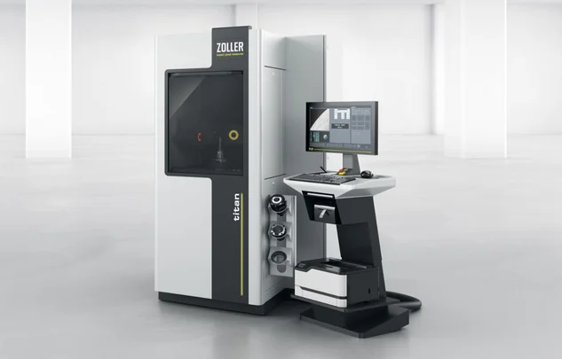
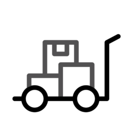
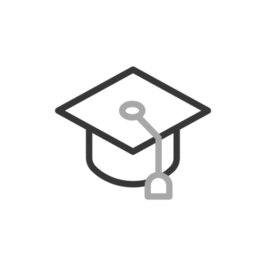
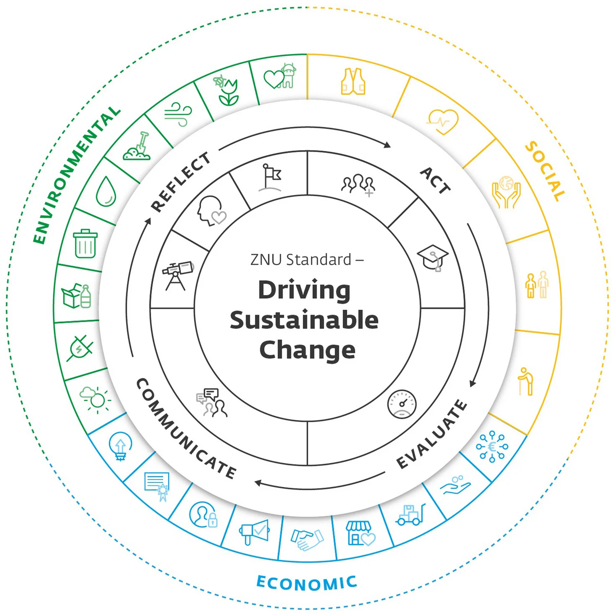

Jardín de Helene Zoller
Se ha creado un jardín de 500 metros cuadrados para el descanso del equipo de ZOLLER, así como para las abejas, mariposas y otros insectos.
Más información

La sostenibilidad desempeña un papel fundamental en la filosofía empresarial de ZOLLER. No solo apostamos por el éxito económico, sino que también asumimos nuestra responsabilidad con el medio ambiente y la sociedad. Toda nuestra gama de productos, que incluye aparatos de medición de precisión para el ajuste, la medición y la comprobación de herramientas de corte, software, interfaces, servicios en la nube y soluciones para la automatización de procesos de herramientas, contribuye a la conservación de los recursos. Nos comprometemos socialmente y ofrecemos condiciones de trabajo justas en nuestra empresa.
La integración de prácticas sostenibles en nuestros procesos comerciales es de vital importancia para ZOLLER. Somos conscientes de que nuestras actividades tienen un efecto en el medio ambiente y, por lo tanto, apostamos por tecnologías que ahorran recursos y métodos de producción eficientes desde el punto de vista energético. Mediante el uso de materiales respetuosos con el medio ambiente y la optimización de nuestros procesos logísticos, contribuimos activamente a reducir nuestra huella ecológica. Además, promovemos una cultura empresarial que se centra en la sostenibilidad. Formamos y motivamos a nuestros empleados|operarios|trabajadores para que tomen decisiones sostenibles y aporten ideas innovadoras para mejorar nuestro balance medioambiental. Creemos que cada individuo puede contribuir a que nuestra empresa sea sostenible. Consideramos que los 17 objetivos de desarrollo sostenible de la Agenda 2030 de las Naciones Unidas son la guía para nuestras propias acciones sostenibles.
ZOLLER también asume su responsabilidad social. Apoyamos a las comunidades locales y nos comprometemos con condiciones de trabajo justas. Al mantener unos estándares éticos en nuestra cadena de suministro, aseguramos que nuestras empresas asociadas también operen de forma sostenible. En general, para ZOLLER, la sostenibilidad no es solo una tendencia, sino un objetivo a largo plazo. Estamos convencidos de que actuar de forma responsable no solo contribuye a proteger nuestro medio ambiente, sino que también refuerza la confianza de nuestros clientes y aumenta nuestra competitividad. Junto con nuestros socios y clientes, trabajamos para crear un futuro sostenible, tanto para nuestra empresa como para las generaciones venideras.
Se ha creado un jardín de 500 metros cuadrados para el descanso del equipo de ZOLLER, así como para las abejas, mariposas y otros insectos.

Producimos exclusivamente con electricidad procedente de energías renovables. Contribuimos a ello con nuestra propia instalación fotovoltaica.

Nuestras tecnologías ayudan a las fábricas a utilizar de forma óptima sus recursos de materiales, maquinaria y herramientas. Esto reduce las piezas defectuosas y aumenta la eficiencia del proceso.

ZOLLER es una empresa innovadora que no solo destaca por su excelencia tecnológica, sino también por su firme compromiso con la sostenibilidad y la diversidad. Damos gran importancia a crear un entorno de trabajo en el que la diversidad se considere una fortaleza.
Con empleados de 24 nacionalidades diferentes, la sede central de ZOLLER en Pleidelsheim fomenta una cultura de respeto mutuo e intercambio intercultural. Esta diversidad contribuye de manera significativa a la creatividad, la innovación y la capacidad de resolución de problemas, ya que se unen diferentes perspectivas. A través de iniciativas específicas y una cultura empresarial abierta, ZOLLER es una señal de responsabilidad social y crecimiento sostenible, tanto ecológico como social. De este modo, la empresa demuestra que el desarrollo sostenible puede ir de la mano de una plantilla diversa para diseñar conjuntamente soluciones orientadas al futuro.
Nuestra plantilla internacional es la prueba de que la diversidad en ZOLLER Pleidelsheim no es solo un objetivo, sino una realidad viva, una fortaleza que nos impulsa cada día.

Menos emisiones
de CO2e para 2030
Situación en 2025: 6695,74 t de CO2e
(Valor inicial 2024: 8804,24 t CO2e)

El 100 % de los proveedores A deberán proceder de
la región para 2030.
Situación en 2025: el 82 % de los proveedores A proceden de la región.
(Valor inicial 2024: 70 %)

Nuestros empaques deben ser
reciclables para 2030.
Situación a finales de 2025: 52 % de envases reciclables.
(Valor inicial 2024: 40 %)

Apoyar proyectos sociales
hasta 2030
Situación en 06/2026: 1 proyectos
(Valor inicial 2024: 0 proyectos)

Satisfacción del cliente
hasta 2028
1,29 (calificación escolar) en 2025 (con alrededor de 1000 encuestas)
(Valor inicial 2024: 1,33)

Aprendices/horas anuales
hasta 2030
Situación en 2025: 6 % de aprendices/horas del total de empleados.
(Valor inicial 2024: 5 %)

 | Detección temprana ¿Qué temas son relevantes para mi empresa? |
 | Filosofía ¿Cuáles son los valores de mi empresa? |
 | Objetivos: ¿Qué quiero lograr y para cuándo? |
| Integración ¿Cómo integro la sostenibilidad en los procesos empresariales? |
| Formación: ¿Cómo formo a mis empleados en materia de sostenibilidad? |
 | Cultura del diálogo ¿Qué comunicamos interna y externamente sobre la sostenibilidad? |
| Diagnóstico: ¿Qué tan eficaz es mi gestión de la sostenibilidad? |
| Detección temprana ¿Qué temas son relevantes para mi empresa? |
| Filosofía ¿Cuáles son los valores de mi empresa? |
| Objetivos: ¿Qué quiero lograr y para cuándo? |
| Integración ¿Cómo integro la sostenibilidad en los procesos empresariales? |
| Formación: ¿Cómo formo a mis empleados en materia de sostenibilidad? |
| Cultura del diálogo ¿Qué comunicamos interna y externamente sobre la sostenibilidad? |
| Diagnóstico: ¿Qué tan eficaz es mi gestión de la sostenibilidad? |
Nuestras actividades son medibles, verificables y continuas.
Entendemos la sostenibilidad como una tarea diaria.

En las instalaciones de ZOLLER hay cinco colonias de abejas. Las cuida un apicultor con mucha experiencia. La presencia de las abejas favorece la salud de los ecosistemas locales. Las abejas aumentan la biodiversidad, ya que no solo polinizan ellas mismas, sino que también atraen a otros polinizadores.

Nuestros artículos se entregaron en 2024 en envases o embalajes reutilizables. Uso de embalajes reutilizables (bolsas de tela) en lugar de embalajes de plástico. Las bolsas de tela son más duraderas y muy reutilizables, a diferencia del plástico de burbujas de PE.

Gracias a los procesos digitales de ABAS y ELO, cada año reducimos el consumo de papel. En 2024, el consumo se redujo en un 25 %, en relación con la cantidad de empleados|operarios|trabajadores.

En comparación con la combinación energética federal alemana en 2023, hemos reducido el consumo de electricidad en 2024. Al utilizar exclusivamente energía ecológica, hemos evitado 404 toneladas de emisiones de CO2e.